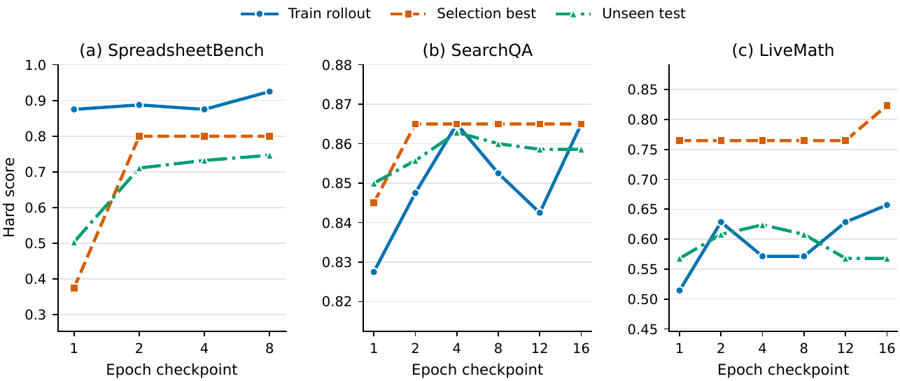

Executive Summary
The AI industry has long carried a quiet illusion — that if we just made models more powerful, agents would become smarter as a natural consequence. So we stacked more GPUs, scaled up parameters, and stretched prompts longer. And yet the agents that actually live in production stayed brittle. Give them the same problem twice and you get two different answers. Tweak the environment and they collapse. The skill documents that an engineer carefully shaped overnight turn into stale artifacts after a few model updates. On May 22, 2026, one arXiv paper (arXiv:2605.23904, SkillOpt: Executive Strategy for Self-Evolving Agent Skills) walked straight into this problem. Microsoft Research's proposal is simple and radical — stop trying to keep changing the model; treat the agent's skill itself as something you can train.
The quantitative shock fits in three lines. First, best-or-tied on 52 of 52 cells — across every combination of 6 benchmarks × 7 models × 3 harnesses, SkillOpt matched or beat all seven baselines: no-skill, human-skill, one-shot LLM-skill, TextGrad, GEPA, Trace2Skill, EvoSkill. Second, the gains — +23.5pt on GPT-5.5 direct chat, +24.8pt on Codex agentic loop, +19.1pt on Claude Code — are on par with or larger than a full model generation jump (GPT-3.5 → GPT-4 was typically +15 to +20pt), at six to seven orders of magnitude less cost than training a frontier model. Third, skills travel between models. Cross-model +15.2%, cross-harness +31.8%, and a SpreadsheetBench skill trained inside Codex jumping from 22.1 to 81.8 (+59.7pt) when carried over to Claude Code — together these turn "a skill is a model-independent asset" from a metaphor into a measurement.
None of this is removed from where we sit. May 22, 2026 — the very day SkillOpt landed on arXiv — was also the day Hancom and LG AI Research signed their strategic ChatEXAONE alliance in Korea. Korea's AI market is projected to grow from KRW 3.44T in 2025 to KRW 4.46T in 2027 (CAGR 14.3%, per IITP), and the country's AI Framework Act took effect on January 22, 2026, putting one question at the center of the industry: when an AI agent misjudges, who is accountable? For the last several years, Pebblous has worked under one proposition — make data diagnosable — through DataClinic, AI-Ready Data, DataGreenhouse, and PebbloSim. What SkillOpt did was extend that proposition into the behavior layer. From the diagnosability of data to the diagnosability of behavior — AI-Ready Data → AI-Ready Behavior.
The numbers SkillOpt reports, at a glance. Sources: arXiv:2605.23904 (Microsoft Research, May 22, 2026), Stanford HAI AI Index 2026, Epoch AI.
+23.5pt
GPT-5.5 direct chat
6-benchmark mean vs. no-skill
52/52
cells best-or-tied
Across all 7 baselines
+31.8%
Cross-harness transfer
Codex → Claude Code, mean
6–7 orders
Cost gap
Frontier training vs. one SkillOpt run
2026-05-22
Same-day signal
SkillOpt release = Hancom·LG ChatEXAONE pact
The illusion of bigger models
There is an old illusion in AI — that if we just made the model more powerful, the agent would naturally become smarter. So we stacked more GPUs, scaled up the parameters, stretched the prompts a little longer each time.
But in production the agent stayed brittle. Ask it the same question twice and you get two different answers. Change the environment a little and it falls apart. The "skill document" an engineer carefully shaped overnight turns into a stale artifact after a few updates.
What makes Microsoft's SkillOpt paper interesting is that it walks straight into this problem. It proposes a radical reframe — "stop trying to keep changing the model itself; treat the agent's skill as something trainable." On the same model, with the same inference cost, but with a different skill document, an agent's mean accuracy jumps by roughly one model generation.
In the same spring of 2026, Big Tech's bets visibly split in two. Camp A keeps scaling the model — OpenAI GPT-5/o3, Anthropic Opus 4.x, Google Gemini Ultra, Meta Llama 5, xAI Grok 4.3 Heavy. Camp B freezes the model and refines the behavior assets that sit on top of it — Microsoft SkillOpt (May 22, 2026), Anthropic's Claude Skills and Managed Agents Dreaming, NousResearch Hermes, Sentient EvoSkill, Stanford's GEPA. It is too early to declare one side correct. What Camp B's arrival makes clear is that "make the model bigger" is no longer the only road — a second road has plainly been laid alongside it.
This report takes apart the first definitive entry on that second road — SkillOpt. How the algorithm works, what the numbers actually say, and what it means for the industry. And in the end, through Pebblous's lens — how a company that has been diagnosing data should receive this shift — we sketch the outline of the next category: AI-Ready Data → AI-Ready Behavior.
The question SkillOpt asks
What exactly does SkillOpt train? The model is frozen. The agent is frozen. The only object that learns is a single markdown file — best_skill.md. Inside it, in plain natural language, sit procedures, domain heuristics, tool-use policies, output constraints, and failure modes. An optimizer model (a separate LLM) watches the target model's execution traces and edits this document. Two models run together, but what learns is the one page of text between them.
The authors' self-framing is worth quoting.
"We formulate agent-skill learning as optimization over an external natural-language state and introduce SkillOpt, a harness-agnostic optimizer with rollout batches, reflection minibatches, add/delete/replace edits, textual learning rates, schedules, held-out acceptance, rejected-edit buffers, and epoch-wise slow/meta update."
— SkillOpt §1 Contributions (arXiv:2605.23904)
One line, plainly stated — "learning is optimization over an external natural-language state." Training has left the billion-dimensional continuous space of weights and moved into the discrete, semantic space of a natural-language document. Three consequences follow.
2.1The substrate of learning has shifted
From weight space to language space. This is not a change of notation; it is a change in what learning is. Weights are bound to a specific model, opaque to human reading once trained, and expensive to edit. A skill document is unbound from any model, readable by a human, and naturally amenable to partial edits.
2.2The output of learning is human-readable
Instead of a multi-gigabyte model file, a few kilobytes of markdown. You can track its change history in git, hold reviews against it, and insert a human approval gate into the loop. From a governance and accountability standpoint, this single fact matters — for the first time, you can ask "why did the trained system decide this?" and get an answer in plain text.
2.3Learning carries across models
Weights are born for one model. But a skill document written in natural language can move — what was trained on GPT-5.5 still works on Qwen3.5-4B; what was learned inside Codex still works inside Claude Code. The authors are explicit about this property.
"A skill is a portable natural-language artifact that packages procedures, domain heuristics, tool policies, output constraints, and failure modes, letting a frozen agent adapt through external text."
— SkillOpt §1 Introduction
Where the three consequences meet, one result waits — best-or-tied on 52 of 52 cells. In every cell across 6 benchmarks × 7 models × 3 harnesses, SkillOpt matched or beat all seven baselines (no-skill, human-skill, one-shot LLM-skill, TextGrad, GEPA, Trace2Skill, EvoSkill). Not a single sweep average — 52 independent measurements, all pointing the same direction.

The three-actor structure made explicit. SkillOpt cleanly separates the model, the agent, and the optimizer — and the object that actually learns is none of the three. It is the single markdown page that mediates between them. Learning happens not inside the model but in the text beside it. That reframing is what finally turned "learn to behave" from a slogan into a practical algorithm.
Gradient descent in text space
One epoch of SkillOpt runs in four stages. Familiar deep-learning training discipline, transplanted whole into text space.
① Rollout
The target model, carrying the current best_skill.md, executes a mini-batch of tasks and collects trajectories and scores.
② Reflect
The optimizer model reads successful and failed trajectories separately and extracts reusable procedures.
③ Edit
Three operations — add, delete, replace — are proposed within an edit budget (the textual learning rate).
④ Gate
An edit is accepted only when it strictly improves the score on a held-out validation set. Otherwise it falls into the rejected-edit buffer and becomes the next epoch's learning signal.
The authors insist that this isomorphism is engineering, not ornament.
"The deep-learning analogy is operational rather than decorative. Rollout and reflection batch sizes control the noise in the evidence used for each edit; the textual learning rate and schedule control how far one skill version is allowed to move from the previous one; the held-out gate plays the role of validation; and the epoch-wise slow/meta update acts like a momentum term, carrying stable editing directions across epochs."
— SkillOpt §1

3.1Weight space ↔ text space — seven correspondences
What deep learning did in weight space, SkillOpt does in text. The mapping is clean — one for one.
| Deep Learning (weight space) | SkillOpt (text space) |
|---|---|
| Mini-batch | Rollout / reflection minibatch |
| Learning rate | Textual learning rate (edit budget) |
| Validation loss | Held-out acceptance gate |
| Momentum | Epoch-wise slow / meta update |
| Gradient | Reflection on success / failure trajectories |
| Negative-sample replay | Rejected-edit buffer |
| Frozen backbone + LoRA | Frozen agent + external skill.md |
The cleaner the mapping, the heavier its implication — "learning" is no longer something that has to happen on weights. Once a model is well-built, refining the natural-language document that sits on top of it is enough to count as training, in any technical sense of the word.
3.2Lineage — eight years of work converging into one system
SkillOpt did not appear from nowhere. It picks up almost every layer of the self-evolving-agent line that built up between 2022 and 2026.
- • ReAct (2022, Yao et al.) — Interleaved reasoning and acting. Gave the agent a "breathing rhythm."
- • Reflexion (2023, Shinn et al., NeurIPS) — Direct ancestor of the "semantic gradient" idea, turning binary or scalar feedback into verbal feedback. Stopped at episodic memory.
- • Voyager (2023, Wang et al.) — First system to build an ever-growing skill library on top of GPT-4. Only added, never refined. Pebblous's earlier piece covered the academic prototype.
- • DSPy (2023, Khattab et al.) — "Don't write prompts; program the LM." Established the pipeline-compiler stance.
- • TextGrad (2024, Yuksekgonul et al.) — First mathematical justification for "differentiation through text." Direct academic ancestor of SkillOpt.
- • GEPA (2025, Stanford) — Showed that reflective prompt evolution can outperform reinforcement learning. ICLR 2026 Oral.
- • Hermes Agent (2025, NousResearch) — The industrial form of a self-evolving agent — a system that grows alongside its user. Pebblous's earlier piece.
- • EvoSkill, Trace2Skill (2026) — Direct rivals that discover skills from failure trajectories. Both are baselines in SkillOpt's 52/52 comparison.
SkillOpt absorbs all of this and becomes the first system to transplant the full deep-learning training discipline onto a stable learning target — a single procedural skill document. Reflexion threw out the intuition of a "semantic gradient"; TextGrad sketched its math; SkillOpt put epochs, mini-batches, validation gates, and momentum on top. The moment the analogy stopped being analogy and became engineering.
One line from the README puts the proposition most plainly.
"Train agent skills like you train neural networks — with epochs, (mini-)batchsize, learning rates, and validation gates — but without touching model weights."
— microsoft/SkillOpt README (MIT License)
+23.5, +24.8, +19.1 — the story behind the means
If "+23.5pt average" sounds abstract, look inside it. On GPT-5.5 direct chat, the baseline → after numbers across the six benchmarks read like this. The real story lives in the per-cell figures, not the mean.
| Benchmark | Domain | No-skill | SkillOpt | Δ |
|---|---|---|---|---|
| SearchQA | Document-search QA | 77.7 | 87.3 | +9.6 |
| ALFWorld | Embodied reasoning | 83.6 | 95.5 | +11.9 |
| DocVQA | Scanned-document understanding | 78.8 | 91.2 | +12.4 |
| LiveMathematicianBench | Advanced mathematics | 37.6 | 66.9 | +29.3 |
| SpreadsheetBench | Spreadsheet manipulation | 41.8 | 80.7 | +38.9 |
| OfficeQA | Enterprise productivity | 33.1 | 72.1 | +39.0 |
| Mean | — | 58.8 | 82.3 | +23.5 |
Source: arXiv:2605.23904 (Microsoft Research, May 22, 2026), Table 1.
Tasks that already sit in the upper bracket move only a few points. But where the baseline is low and procedural knowledge is decisive, the lift explodes. This is not coincidence. Procedures can be written down as explicit propositions — "in this situation, do this" — and that is exactly the kind of knowledge a skill document expresses well. When the heuristics in a seasoned Excel user's head, or an Olympiad mathematician's playbook, are translated into the right natural-language form, they raise the model's behavior by roughly one model generation.
Three cells where the explosion is loudest deserve their own panel — Excel, the office productivity stack, and Olympiad-level math. Domains humans have spent decades sharpening by hand. A typical generation jump for a model is +15 to +20pt; these three cells stack two such jumps on top of one another.
+39.0
OfficeQA
33.1 → 72.1, enterprise productivity
+38.9
SpreadsheetBench
41.8 → 80.7, spreadsheet manipulation
+29.3
LiveMath
37.6 → 66.9, advanced mathematics
And this advantage holds across all 52 cells — pick any model, any harness, any benchmark, and SkillOpt is not below any of its direct rivals (TextGrad, GEPA, Trace2Skill, EvoSkill). More telling is the shape of the training curve as epochs run — not just the final mean but the dynamics over time.

"SkillOpt is best or tied-best on 52 of 52 cells and outperforms no-skill, human-skill, one-shot LLM-skill, prompt-optimization (TextGrad, GEPA), and skill-evolution (Trace2Skill, EvoSkill) baselines under every model."
— SkillOpt §1 Contributions
One single case sharpens the picture: on the Codex SpreadsheetBench cell, EvoSkill had already pushed performance from 27.5 to 67.5. SkillOpt then took that 67.5 to 85.0 (+17.5) — a comparable lift on top of a direct rival from the same self-evolving family. Doing it once is a flier; doing it consistently across 52 cells is a difference in discipline, not statistics.
One caveat — confidence intervals are not reported. The paper publishes per-cell numbers and six-benchmark means, but not standard deviations or confidence intervals. Calling the result "statistically robust" would therefore overstate the evidence; "reported gain" is the safer phrasing. That said, the 52/52 best-or-tied claim is built on per-cell measurements, not a single mean, so the consistency of the advantage is itself a strong signal.
Portable skills, non-portable weights
Weights are born for one model. A LoRA adapter fine-tuned for GPT-5.5 will not bolt onto Qwen3.5. Change the model, train from scratch. Skill documents are different. When a SpreadsheetBench skill trained on GPT-5.4 was carried over to GPT-5.4-mini, it still delivered +9.4pt; to GPT-5.4-nano, +15.2pt. The cross-harness transfers are even more striking — a skill trained inside Codex, dropped into Claude Code, pushed SpreadsheetBench from 22.1 to 81.8 (+59.7pt). A different vendor's model, a different vendor's harness, the same natural-language document.
5.1Transfer experiments — three kinds of portability
| Transfer type | Setup | Measured gain |
|---|---|---|
| Cross-model (large → small) | Trained on GPT-5.4 → run on GPT-5.4-mini, SpreadsheetBench | +9.4pt |
| Cross-model (large → nano) | Trained on GPT-5.4 → run on GPT-5.4-nano (paper estimate) | +15.2% |
| Cross-harness | Trained inside Codex → executed inside Claude Code (mean) | +31.8% |
| Single extreme case | Codex → Claude Code, SpreadsheetBench (22.1 → 81.8) | +59.7pt |
| Self-optimizer | GPT-5.4-nano serves as its own optimizer | +10.4% |
Source: arXiv:2605.23904, in-paper transfer tables.
5.2The cost gap — six to seven orders of magnitude
The economic implication is large. Frontier training costs run at GPT-4 ~$78M, Gemini Ultra ~$191M, and GPT-5 estimated at $200M–$500M (Stanford HAI AI Index 2025, Epoch AI). One SkillOpt optimization run, by the paper's qualitative report, costs "tens to hundreds of dollars." Lay them in the same units and the order-of-magnitude gap is plain.
| Training method | Per-run cost | Output format | Model dependency |
|---|---|---|---|
| Frontier pre-training | $78M – $500M | Model weights (GB – TB) | Fully model-bound |
| LoRA fine-tuning | $1K – $100K | Adapter weights (MB) | Compatible models only |
| One SkillOpt run | $100 – $500 | best_skill.md (KB) | Model-independent |
Sources: Stanford HAI AI Index 2025/2026, Epoch AI (2024), arXiv:2605.23904 §3 (qualitative estimate).
Six to seven orders of magnitude apart. Frontier training sits near $108; SkillOpt sits near $102. And the output is not bound to any model — a skill document once carefully shaped carries naturally into the next-generation model, and across vendors.
This changes the definition of an asset class. Model weights have been consumables that must be rebuilt every generation. A skill document is capital that accumulates. The authors put it cleanly.
"SkillOpt instead optimizes a persistent skill document that can be trained, validated, exported, and reused with the adapted model, applying language-level controllability to a stable procedural skill state."
— SkillOpt §2 Related Work
Two camps, one learning organization
In the same spring of 2026, Big Tech's bets visibly split in two at once. It is too early to call either side correct, but the shape of the divide is clear.
| Axis | Camp A — Model scaling | Camp B — Train the behavior asset |
|---|---|---|
| Lead players | OpenAI, Meta, Google DeepMind, xAI | Microsoft Research, Anthropic, NousResearch, Sentient, Stanford (GEPA) |
| Flagship outputs | GPT-5.5 (1,000+ tool calls), Llama 5, Gemini Ultra, Grok 4.3 Heavy | SkillOpt, Claude Skills + Managed Agents Dreaming, Hermes Agent |
| Core proposition | "agentic model first, chat model second" | "train the procedure, not the weights" |
| Training cost | $100M – $500M per frontier run | $100 – $500 per SkillOpt run |
| Output | Model weights (GB – TB), bound to the model | Skill docs · memory · traces, portable |
| Standardization stance | Proprietary API and model first | MCP open standard, Agent Skills open standard, SkillOpt under MIT |
Worth noting is the symmetry on standardization. Anthropic released "Claude Skills" as an open standard and donated MCP to the Linux Foundation in May 2026. Microsoft put SkillOpt on GitHub under the MIT license. Two of the largest labs, at roughly the same moment, opened the skill, tool, and memory layers to everyone. Read together, it looks like a coordinated move to anchor the market — before any one player can monopolize the standard — on the premise that behavior assets are shareable, natural-language assets.
6.1The same day in Korea — a signal, not a coincidence
Something meaningful happened on the same day in Korea. May 22, 2026 — the day SkillOpt landed on arXiv — was also the day Hancom and LG AI Research signed a strategic ChatEXAONE business alliance (reported simultaneously by ZDNet Korea, AI Times, and Digital Daily). It is the first external integration in which a Hancom AI agent is formally embedded into LG AI Research's ChatEXAONE platform. Could be coincidence — but the direction it points to is unmistakable.
Korea's AI market is expanding from KRW 3.44T in 2025 to a projected KRW 4.46T in 2027 (CAGR 14.3%, per IITP), and Naver's "Agent N" (shopping in Q1 2026, search in Q2), Kakao's "Kanana," Upstage's recent acquisition by Daum, KT's Agent Builder + Agentic Fabric, and SK Telecom's AI-Native pivot are all moving on the same current. At the center of that current stands the Korea AI Framework Act, effective January 22, 2026 — the world's second comprehensive AI law after the EU AI Act, and one whose central question is: when an AI agent misjudges, who is accountable? The moment the Korean industry began asking "who manages and who diagnoses an agent's behavior?" lines up precisely with the moment Microsoft put forward the blueprint of treating skill documents as a trainable asset.
Korea is not yet at the "skill-asset optimizer" stage. It is at the public-market deployment stage of domain-specific agents. But the deeper that stage runs, the more central the question becomes — who diagnoses, and who vouches for, the behavior this agent has learned? As the AgentOps market climbs from $1.8B in 2025 to a projected $58.4B by 2034 (CAGR 45%), a new sub-category is being born inside it — SkillOps.
Diagnosed skill documents — from data to behavior
For the last several years, Pebblous has worked on one thing — making data diagnosable. DataClinic reads training data along five signals: label integrity, distribution balance, freshness, missingness, and outliers. What SkillOpt proposes is the same proposition, extended into the behavior layer. From diagnosable data to diagnosable behavior. AI-Ready Data → AI-Ready Behavior.
7.1The DataClinic five signals, remapped to SkillClinic
A skill document, in our reading, deserves the same five signals. As data labels can have integrity, so can validation gates. As data has distribution, skills have portability. Mapped to a table, the correspondences look like this.
| DataClinic (training data) | SkillClinic (skill document) | Diagnostic question |
|---|---|---|
| Label integrity | Validation integrity | Is the held-out gate history clean? |
| Distribution balance | Portability | Does the skill still work on other models and harnesses? |
| Freshness | Update freshness | When did the optimizer last refine this? Has it gone stale? |
| Missingness | Semantic gaps | Which failure modes does the skill still not cover? |
| Outliers | Execution anomalies | Are the same kinds of rejections piling up in the rejected-edit buffer? |
7.2Three questions customers will start to ask
On top of those five signals, three questions will land on the customer's desk. Once the SkillOpt paradigm begins to land in industry, all of us will stand in front of them.
① State
How many skill documents does our company hold today, and which are alive, which are dead, which are duplicates?
② Validation
How do humans review the edits the optimizer just made? Is the validation gate strict enough?
③ Transfer
When we move from GPT-5.5 to Claude Code, which skills carry over and which ones break?
All of these are jobs for a data-diagnosis company. What Pebblous has done for data, applied to behavior. Diagnosing structural and semantic defects that validation loss alone will never catch. In a pipeline that runs training data → skill document → agent evolution, if no system diagnoses quality at each step, the optimizer slowly — but surely — drifts the wrong way. The accountability question at the heart of Korea's AI Framework Act (effective January 22, 2026) meets this current head-on — when an agent misjudges, the ability to prove, in human-readable form, which line of which skill document caused that misjudgment becomes the new standard for governance.
AI-Ready Data → AI-Ready Behavior. A company that has made data diagnosable now turns to make behavior diagnosable. A market called "diagnosed skill documents" is being born, and we find ourselves standing naturally on that ground. This is not self-promotion. We write the proposition as a conclusion any company that has been diagnosing data would inevitably reach in front of this shift.
We do not lay out a concrete product roadmap here. Two things are clear, though: the five DataClinic signals remap cleanly into the five SkillClinic signals, and a behavior database (agent success/failure logs, execution traces, tool-call patterns) joins naturally with Pebblous's existing PebbloSim and DataGreenhouse assets. The work we have done on data can move, intact, to behavior assets — that is the next coordinate one paper has handed us.
Two earlier pieces in this series traced the same current from different angles. The academic prototype was covered in Voyager — the origin of AI that teaches itself; the industrial form in Hermes Agent — a system that grows with its user. SkillOpt is the definitive entry of the two, and together the three pieces sketch Pebblous's coordinate system for self-evolving agents.
Coordinates drawn by one paper
One paper has redrawn the coordinates of the era. The path of scaling the model further is still open. But a second path is now plainly laid alongside it — leave the model as is, and train the behavior instead. An optimizer writes a skill document, a validation gate accepts it, that document moves to a different model and produces another lift.
This is not merely a way to avoid fine-tuning costs. It means the set of AI's trainable objects has expanded from weights into natural-language documents, and those documents — once carefully shaped — become accumulating assets that move forward into the next model. Two large labs opened the skill layer at roughly the same time. Korea's AI Framework Act has placed a heavy question of accountability on top of all of this. The question we must answer has become clear.
Pebblous's read fits in one line — AI-Ready Data → AI-Ready Behavior. A company that has made data diagnosable now turns to make behavior diagnosable. In an era where, for the first time, the output of training is human-readable, the ability to answer "why did this agent behave this way?" becomes the next definition of data quality.
One paper was the flare. Alongside it sit a same-day Korean industry pact and the enforcement of an AI law. In the center of this current, one new category sits open — "diagnosed skill documents." We find ourselves standing there. Not as self-promotion, but as the next coordinate any data-diagnosis company would naturally arrive at.
Frequently Asked Questions
References
Primary sources (paper & code)
- 1.Yang, Y., Gong, Z., Huang, W., Yang, Q., Zhou, Z., Huang, Z., Li, Y., Gao, X., Dai, Q., Liu, B., Qiu, K., Yang, Y., Chen, D., Yang, X., & Luo, C. (2026). SkillOpt: Executive Strategy for Self-Evolving Agent Skills. arXiv:2605.23904. Microsoft Research, May 22, 2026.
- 2.Microsoft Research (2026). microsoft/SkillOpt. GitHub repository (MIT License).
- 3.Microsoft Research (May 22, 2026). SkillOpt project page.
Academic lineage
- 4.Yao, S., Zhao, J., Yu, D., Du, N., Shafran, I., Narasimhan, K., & Cao, Y. (2023). ReAct: Synergizing Reasoning and Acting in Language Models. ICLR 2023. arXiv:2210.03629.
- 5.Shinn, N., Cassano, F., Berman, E., Gopinath, A., Narasimhan, K., & Yao, S. (2023). Reflexion: Language Agents with Verbal Reinforcement Learning. NeurIPS 2023. arXiv:2303.11366.
- 6.Wang, G., Xie, Y., Jiang, Y., Mandlekar, A., Xiao, C., Zhu, Y., Fan, L., & Anandkumar, A. (2023). Voyager: An Open-Ended Embodied Agent with Large Language Models. NeurIPS 2023 Workshop. arXiv:2305.16291.
- 7.Khattab, O., Singhvi, A., Maheshwari, P., Zhang, Z., et al. (2023). DSPy: Compiling Declarative Language Model Calls into Self-Improving Pipelines. arXiv:2310.03714.
- 8.Yuksekgonul, M. et al. (2024). TextGrad: Automatic "Differentiation" via Text. arXiv:2406.07496.
- 9.Agrawal, L. A. et al. (2025). GEPA: Reflective Prompt Evolution Can Outperform Reinforcement Learning. ICLR 2026 (Oral). arXiv:2507.19457.
- 10.Madaan, A. et al. (2023). Self-Refine: Iterative Refinement with Self-Feedback. arXiv:2303.17651.
- 11.EvoSkill team (2026). EvoSkill: Skill Evolution from Failure Trajectories. arXiv:2603.02766.
- 12.Trace2Skill team (2026). Trace2Skill: From Agent Traces to Reusable Skills. arXiv:2603.25158.
Market & industry reports
- 13.Stanford HAI (2026). AI Index Report 2026.
- 14.McKinsey (November 2025). The state of AI in 2025: Agents, innovation, and transformation.
- 15.MarketsAndMarkets (2026). AI Agents Market.
- 16.MarketIntelo (2026). AgentOps AI Infrastructure Platform Market. (2034 estimate of $58.4B — source flagged as estimate.)
- 17.Epoch AI (2024). How much does it cost to train frontier AI models?
- 18.Cottier, B. & Rahman, R. (2024). The rising costs of training frontier AI models. arXiv:2405.21015.
- 19.Pillitteri, P. (May 2026). SkillOpt — Microsoft text-space optimizer for agent skills.
Korea market & policy
- 20.IITP (2026). 2026 Korea AI & ICT Industry Report.
- 21.Korea AI Framework Act — Framework Act on the Development of Artificial Intelligence and the Establishment of a Foundation for Trust (passed Dec 26, 2024; effective Jan 22, 2026).
- 22.ZDNet Korea (May 22, 2026). "EXAONE inside Hangul documents — Hancom and LG AI Research sign strategic business alliance."
- 23.AI Times (May 22, 2026). Report on the Hancom–LG AI Research ChatEXAONE alliance.
- 24.peekaboolabs.ai (2026). Guide to Korea's AI Framework Act.
- 25.Samsung SDS (2026). 2026 Data Management Trends — Quality and Control Over Expansion.
Pebblous earlier pieces (series)
- 26.Pebblous (May 2026). Voyager — the origin of AI that teaches itself. Academic-prototype track.
- 27.Pebblous (May 13, 2026). Agents grow up — Hermes Agent and the era of autonomous data operating systems. Industrial-implementation track.